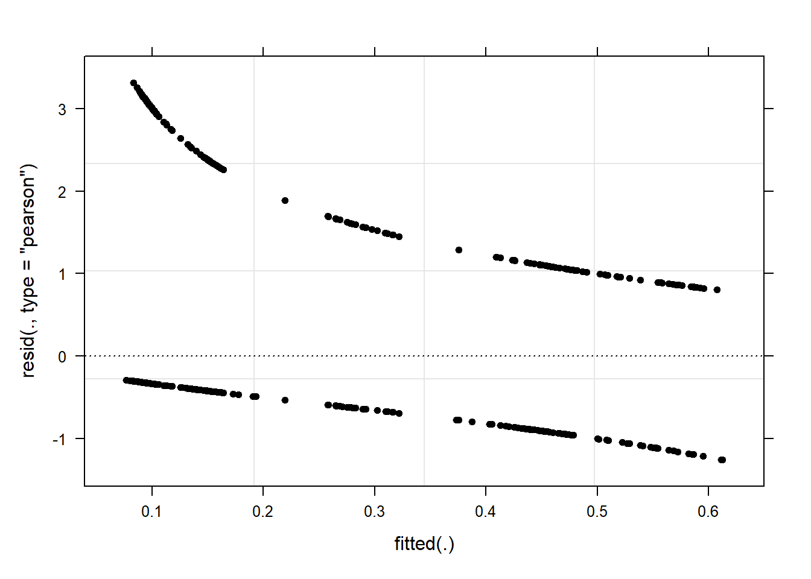

Week 12 Logistic Mixed-Effects Regression
This week, we will learn more about mixed-effects regressions and we will extend what we learned last week by fitting a logistic mixed-effects model.
Preparation and session set up
For this week’s content, we need to install certain packages from an R library so that the scripts shown below are executed without errors. hence, before turning to the code below, please install the packages by running the code below this paragraph - it may take some time (between 1 and 5 minutes to install all of the libraries so you do not need to worry if it takes some time).
# install
install.packages("Boruta")
install.packages("car")
install.packages("emmeans")
install.packages("effects")
install.packages("flextable")
install.packages("ggplot2")
install.packages("ggpubr")
install.packages("Hmisc")
install.packages("knitr")
install.packages("lme4")
install.packages("MASS")
install.packages("mclogit")
install.packages("MuMIn")
install.packages("nlme")
install.packages("ordinal")
install.packages("rms")
install.packages("robustbase")
install.packages("sjPlot")
install.packages("stringr")
install.packages("tibble")
install.packages("dplyr")
install.packages("vcd")
install.packages("vip")
# install klippy for copy-to-clipboard button in code chunks
install.packages("remotes")
remotes::install_github("rlesur/klippy")Now that we have installed the packages, we activate them as shown below.
# set options
options(stringsAsFactors = F) # no automatic data transformation
options("scipen" = 100, "digits" = 12) # suppress math annotation
# load packages
#library(Boruta)
library(car)
library(effects)
library(emmeans)
library(flextable)
library(ggfortify)
library(ggplot2)
library(ggpubr)
library(Hmisc)
library(knitr)
library(lme4)
library(MASS)
#library(mclogit)
library(MuMIn)
library(nlme)
#library(ordinal)
library(rms)
#library(robustbase)
library(sjPlot)
library(stringr)
library(tibble)
library(vcd)
library(vip)
# activate klippy for copy-to-clipboard button
klippy::klippy()12.1 Introduction
We now turn to an extension of binomial logistic regression: mixed-effects binomial logistic regression. As is the case with linear mixed-effects models logistic mixed effects models have the following advantages over simpler statistical tests:
Mixed-effects models are multivariate, i.e. they test the effect of several predictors simultaneously while controlling for the effect of all other predictors.
Mixed models allow to statistically incorporate within-speaker variability and are thus fit to model hierarchical or nested data structures. This applies if several observations are produced by an individual speaker, for instance.
Mixed-models provide a wealth of diagnostic statistics which enables us to control e.g. multicollinearity, i.e. correlations between predictors, and to test whether conditions or requirements are violated (e.g. homogeneity of variance, etc.).
Major disadvantages of regression modeling are that they are prone to producing high \(\beta\)-errors (see Johnson 2009) and that they require rather large data sets.
12.2 Basic concepts
As is the case with linear mixed-effects models, binomial logistic mixed-effect models are multivariate analyses that treat data points as hierarchical or grouped in some way. In other words, they take into account that the data is nested in the sense that data points are produced by the same speaker or are grouped by some other characteristics. In mixed-models, hierarchical structures are modelled as random effects. If the random effect structure represents speakers then this means that a mixed-model would have a separate intercept and/or slope for each speaker.
Random Effects in linear models can be visualized using two parameters: the intercept (the point where the regression line crosses the y-axis at x = 0) and the slope (the acclivity of the regression line). In contrast to linear mixed-effects models, random effects differ in the position and the slope of the logistic function that is applied to the likelihood of the dependent variable. random intercepts (center left panel \(\ref{fig:mem02}\)) or various random slopes (center right panel \(\ref{fig:mem02}\)), or both, various random intercepts and various random slopes (right panel \(\ref{fig:mem02}\)). In the following, we will only focus on models with random intercepts because this is the by far more common method and because including both random intercepts and random slopes requires huge amounts of data. Consider the Figure below to understand what is meant by “random intercepts”.

The upper left panel merely shows the logistic curve representing the predictions of a fixed-effects logistic regression with a single intercept and slope. The upper right panel shows the logistic curves representing the predictions of a of a mixed-effects logistic regression with random intercepts for each level of a grouping variable. The lower left panel shows the logistic curves representing the predictions of a mixed-effects logistic regression with one intercept but random slopes for each level of a grouping variable. The lower right panel shows the logistic curves representing the predictions of a mixed-effects logistic regression with random intercepts and random slopes for each level of a grouping variable.
After adding random intercepts, predictors (or fixed effects) are added to the model (just like with multiple regression). So mixed-effects are called mixed-effects because they contain both random and fixed effects.
In terms of general procedure, random effects are added first, and only after we have ascertained that including random effects is warranted, we test whether including fixed-effects is warranted (Field, Miles, and Field 2012). We test whether including random effects is warranted by comparing a model, that bases its estimates of the dependent variable solely on the base intercept, with a model that bases its estimates of the dependent variable solely on the intercepts of the random effect. If the mixed-effects model explains significantly more variance than the fixed-effects model without random effect structure, then we continue with the mixed-effects model. In other words, including random effects is justified.
12.3 Example: Discourse LIKE in Irish English
In this example we will investigate which factors correlate with the use of final discourse like (e.g. “The weather is shite, like!”) in Irish English. The data set represents speech units in a corpus that were coded for the speaker who uttered a given speech unit, the gender (Gender: Men versus Women) and age of that speaker (Age: Old versus Young), whether the interlocutors were of the same or a different gender (ConversationType: SameGender versus MixedGender), and whether another final discourse like had been used up to three speech units before (Priming: NoPrime versus Prime), whether or not the speech unit contained an final discourse like (SUFLike: 1 = yes, 0 = no. To begin with, we load the data and inspect the structure of the data set,
# load data
mblrdata <- base::readRDS(url("https://slcladal.github.io/data/mbd.rda", "rb"))ID | Gender | Age | ConversationType | Priming | SUFlike |
S1A-061$C | Women | Young | MixedGender | NoPrime | 0 |
S1A-023$B | Women | Young | MixedGender | NoPrime | 0 |
S1A-054$A | Women | Young | SameGender | NoPrime | 0 |
S1A-090$B | Women | Young | MixedGender | NoPrime | 0 |
S1A-009$B | Women | Old | SameGender | Prime | 0 |
S1A-085$E | Men | Young | MixedGender | Prime | 1 |
S1A-003$C | Women | Young | MixedGender | NoPrime | 1 |
S1A-084$C | Women | Young | SameGender | NoPrime | 0 |
S1A-076$A | Women | Young | SameGender | NoPrime | 0 |
S1A-083$D | Men | Old | MixedGender | NoPrime | 1 |
S1A-068$A | Women | Young | SameGender | NoPrime | 0 |
S1A-066$B | Women | Young | SameGender | NoPrime | 0 |
S1A-061$A | Men | Old | MixedGender | NoPrime | 1 |
S1A-049$A | Women | Young | SameGender | NoPrime | 0 |
S1A-022$B | Women | Young | MixedGender | NoPrime | 0 |
As all variables except for the dependent variable (SUFlike) are character strings, we
factorize the independent variables.
# def. variables to be factorized
vrs <- c("ID", "Age", "Gender", "ConversationType", "Priming")
# def. vector with variables
fctr <- which(colnames(mblrdata) %in% vrs)
# factorize variables
mblrdata[,fctr] <- lapply(mblrdata[,fctr], factor)
# relevel Age (Young = Reference)
mblrdata$Age <- relevel(mblrdata$Age, "Young")
# order data by ID
mblrdata <- mblrdata %>%
dplyr::arrange(ID)ID | Gender | Age | ConversationType | Priming | SUFlike |
S1A-001$A | Men | Old | SameGender | NoPrime | 0 |
S1A-001$A | Men | Old | SameGender | NoPrime | 0 |
S1A-001$A | Men | Old | SameGender | NoPrime | 0 |
S1A-001$A | Men | Old | SameGender | NoPrime | 0 |
S1A-001$A | Men | Old | SameGender | NoPrime | 0 |
S1A-001$A | Men | Old | SameGender | NoPrime | 0 |
S1A-001$A | Men | Old | SameGender | NoPrime | 0 |
S1A-001$A | Men | Old | SameGender | NoPrime | 0 |
S1A-001$B | Women | Old | MixedGender | NoPrime | 0 |
S1A-001$B | Women | Old | MixedGender | NoPrime | 0 |
S1A-001$B | Women | Old | MixedGender | NoPrime | 0 |
S1A-001$B | Women | Old | MixedGender | Prime | 0 |
S1A-001$B | Women | Old | MixedGender | NoPrime | 1 |
S1A-001$B | Women | Old | MixedGender | NoPrime | 0 |
S1A-001$B | Women | Old | MixedGender | NoPrime | 0 |
Before continuing, a few words about the minimum number of random effect levels and the minimum number of observations per random effect level are in order.
While many data points per random variable level increases statistical power and thus to more robust estimates of the random effects (Austin and Leckie 2018), it has been shown that small numbers of observations per random effect variable level do not cause serious bias and it does not negatively affect the estimates of the fixed-effects coefficients (Bell, Ferron, and Kromrey 2008; Clarke 2008; Clarke and Wheaton 2007; Maas and Hox 2005). The minimum number of observations per random effect variable level is therefore 1.
In simulation study, (Bell, Ferron, and Kromrey 2008) tested the impact of random variable levels with only a single observation ranging from 0 to 70 percent. As long as there was a relatively high number of random effect variable levels (500 or more), small numbers of observations had almost no impact on bias and Type 1 error control.
We now plot the data to inspect the relationships within the data set.
ggplot(mblrdata, aes(Gender, SUFlike, color = Priming)) +
facet_wrap(Age~ConversationType) +
stat_summary(fun = mean, geom = "point") +
stat_summary(fun.data = mean_cl_boot, geom = "errorbar", width = 0.2) +
theme_set(theme_bw(base_size = 10)) +
theme(legend.position = "top") +
labs(x = "", y = "Observed Probabilty of discourse like") +
scale_color_manual(values = c("gray20", "gray70"))
The upper left panel in the Figure above indicates that men use discourse like more frequently than women. The center right panel suggests that priming significantly increases the likelihood of discourse like being used. The center left panel suggests that speakers use discourse like more frequently in mixed-gender conversations. However, the lower right panel indicates an interaction between gender and conversation type as women appear to use discourse like less frequently in same gender conversations while the conversation type does not seem to have an effect on men. After visualizing the data, we will now turn to the model building process.
12.4 Model Building
In a first step, we set the options.
# set options
options(contrasts =c("contr.treatment", "contr.poly"))
mblrdata.dist <- datadist(mblrdata)
options(datadist = "mblrdata.dist")In a next step, we generate a base-line mixed-model using the glmer function with a random intercept for ID.
# base-line mixed-model
m0.glmer = glmer(SUFlike ~ (1|ID), data = mblrdata, family = binomial) 12.5 Model Fitting
The next step is to fit the model which means that we aim to find the “best” model, i.e. the minimal adequate model. In this case, we will use a manual step-wise step-up, forward elimination procedure. Before we begin with the model fitting process we need to add ´control = glmerControl(optimizer = “bobyqa”)´ to avoid unnecessary failures to converge.
m0.glmer <- glmer(SUFlike ~ 1+ (1|ID), family = binomial, data = mblrdata, control=glmerControl(optimizer="bobyqa"))During each step of the fitting procedure, we test whether certain assumptions on which the model relies are violated. To avoid incomplete information (a combination of variables does not occur in the data), we tabulate the variables we intend to include and make sure that all possible combinations are present in the data. Including variables although not all combinations are present in the data would lead to unreliable models that report (vastly) inaccurate results. A special case of incomplete information is complete separation which occurs if one predictor perfectly explains an outcome (in that case the incomplete information would be caused by a level of the dependent variable). In addition, we make sure that the VIFs do not exceed a maximum of 3 for main effects (Zuur, Ieno, and Elphick 2010) - Booth GD (1994) suggest that VIFs should ideally be lower than 3 for as higher values would indicate multicollinearity and thus that the model is unstable. The value of 3 should be taken with a pinch of salt because there is no clear consensus about what the maximum VIF for interactions should be or if it should be considered at all. The reason is that we would, of course, expect the VIFs to increase when we are dealing with interactions as the main effects that are part of the interaction are very likely to correlate with the interaction itself. However, if the VIFs are too high, then this will still cause the issues with the attribution of variance. The value of 3 was chosen based on recommendations in the standard literature on multicollinearity (Zuur et al. 2009; Neter, Wasserman, and Kutner 1990). Only once we have confirmed that the incomplete information, complete separation, and multicollinearity are not a major concern, we generate the more saturated model and test whether the inclusion of a predictor leads to a significant reduction in residual deviance. If the predictor explains a significant amount of variance, it is retained in the model while being disregarded in case it does not explain a sufficient quantity of variance.
# add Priming
ifelse(min(ftable(mblrdata$Priming, mblrdata$SUFlike)) == 0, "incomplete information", "okay")## [1] "okay"m1.glmer <- update(m0.glmer, .~.+Priming)
anova(m1.glmer, m0.glmer, test = "Chi") ## Data: mblrdata
## Models:
## m0.glmer: SUFlike ~ 1 + (1 | ID)
## m1.glmer: SUFlike ~ (1 | ID) + Priming
## npar AIC BIC logLik deviance Chisq Df
## m0.glmer 2 1828.492271 1839.694076 -912.2461355 1824.492271
## m1.glmer 3 1702.773341 1719.576048 -848.3866704 1696.773341 127.71893 1
## Pr(>Chisq)
## m0.glmer
## m1.glmer < 0.000000000000000222 ***
## ---
## Signif. codes: 0 '***' 0.001 '**' 0.01 '*' 0.05 '.' 0.1 ' ' 1Since the tests do not show problems relating to incomplete information, because including Priming significantly improves the model fit (decrease in AIC and BIC values), and since it correlates significantly with our dependent variable, we include Priming into our model.
# add Age
ifelse(min(ftable(mblrdata$Age, mblrdata$SUFlike)) == 0, "incomplete information", "okay")## [1] "okay"m2.glmer <- update(m1.glmer, .~.+ Age)
ifelse(max(car::vif(m2.glmer)) <= 3, "VIFs okay", "VIFs unacceptable") ## [1] "VIFs okay"anova(m2.glmer, m1.glmer, test = "Chi") ## Data: mblrdata
## Models:
## m1.glmer: SUFlike ~ (1 | ID) + Priming
## m2.glmer: SUFlike ~ (1 | ID) + Priming + Age
## npar AIC BIC logLik deviance Chisq Df
## m1.glmer 3 1702.773341 1719.576048 -848.3866704 1696.773341
## m2.glmer 4 1704.210790 1726.614400 -848.1053950 1696.210790 0.56255 1
## Pr(>Chisq)
## m1.glmer
## m2.glmer 0.45323Anova(m2.glmer, test = "Chi")## Analysis of Deviance Table (Type II Wald chisquare tests)
##
## Response: SUFlike
## Chisq Df Pr(>Chisq)
## Priming 129.51634 1 < 0.0000000000000002 ***
## Age 0.56943 1 0.45049
## ---
## Signif. codes: 0 '***' 0.001 '**' 0.01 '*' 0.05 '.' 0.1 ' ' 1The ANOVAs show that Age is not significant and the first ANOVA also shows that the BIC has increased which indicates that Age does not decrease variance. In such cases, the variable should not be included.
However, if the second ANOVA would report Age as being marginally significant, a case could be made for including it but it would be better to change the ordering in which predictors are added to the model. This is, however, just a theoretical issue here as Age is clearly not significant.
# add Gender
ifelse(min(ftable(mblrdata$Gender, mblrdata$SUFlike)) == 0, "incomplete information", "okay")## [1] "okay"m3.glmer <- update(m1.glmer, .~.+Gender)
ifelse(max(car::vif(m3.glmer)) <= 3, "VIFs okay", "VIFs unacceptable") ## [1] "VIFs okay"anova(m3.glmer, m1.glmer, test = "Chi")## Data: mblrdata
## Models:
## m1.glmer: SUFlike ~ (1 | ID) + Priming
## m3.glmer: SUFlike ~ (1 | ID) + Priming + Gender
## npar AIC BIC logLik deviance Chisq Df
## m1.glmer 3 1702.773341 1719.576048 -848.3866704 1696.773341
## m3.glmer 4 1679.397070 1701.800680 -835.6985349 1671.397070 25.37627 1
## Pr(>Chisq)
## m1.glmer
## m3.glmer 0.00000047168 ***
## ---
## Signif. codes: 0 '***' 0.001 '**' 0.01 '*' 0.05 '.' 0.1 ' ' 1Anova(m3.glmer, test = "Chi")## Analysis of Deviance Table (Type II Wald chisquare tests)
##
## Response: SUFlike
## Chisq Df Pr(>Chisq)
## Priming 124.40790 1 < 0.000000000000000222 ***
## Gender 28.56776 1 0.000000090476 ***
## ---
## Signif. codes: 0 '***' 0.001 '**' 0.01 '*' 0.05 '.' 0.1 ' ' 1Gender is significant and will therefore be included as a predictor (you can also observe that including Gender has substantially decreased both AIC and BIC).
# add ConversationType
ifelse(min(ftable(mblrdata$ConversationType, mblrdata$SUFlike)) == 0, "incomplete information", "okay")## [1] "okay"m4.glmer <- update(m3.glmer, .~.+ConversationType)
ifelse(max(car::vif(m4.glmer)) <= 3, "VIFs okay", "VIFs unacceptable") ## [1] "VIFs okay"anova(m4.glmer, m3.glmer, test = "Chi") ## Data: mblrdata
## Models:
## m3.glmer: SUFlike ~ (1 | ID) + Priming + Gender
## m4.glmer: SUFlike ~ (1 | ID) + Priming + Gender + ConversationType
## npar AIC BIC logLik deviance Chisq Df
## m3.glmer 4 1679.397070 1701.800680 -835.6985349 1671.397070
## m4.glmer 5 1668.583222 1696.587734 -829.2916108 1658.583222 12.81385 1
## Pr(>Chisq)
## m3.glmer
## m4.glmer 0.00034406 ***
## ---
## Signif. codes: 0 '***' 0.001 '**' 0.01 '*' 0.05 '.' 0.1 ' ' 1Anova(m4.glmer, test = "Chi")## Analysis of Deviance Table (Type II Wald chisquare tests)
##
## Response: SUFlike
## Chisq Df Pr(>Chisq)
## Priming 130.69147 1 < 0.000000000000000222 ***
## Gender 13.44553 1 0.00024559 ***
## ConversationType 12.99301 1 0.00031266 ***
## ---
## Signif. codes: 0 '***' 0.001 '**' 0.01 '*' 0.05 '.' 0.1 ' ' 1ConversationType improves model fit (AIC and BIC decrease and it is reported as being significant) and will, therefore, be included in the model.
# add Priming*Age
ifelse(min(ftable(mblrdata$Priming, mblrdata$Age, mblrdata$SUFlike)) == 0, "incomplete information", "okay")## [1] "okay"m5.glmer <- update(m4.glmer, .~.+Priming*Age)
ifelse(max(car::vif(m5.glmer)) <= 3, "VIFs okay", "WARNING: high VIFs!") ## [1] "VIFs okay"anova(m5.glmer, m4.glmer, test = "Chi") ## Data: mblrdata
## Models:
## m4.glmer: SUFlike ~ (1 | ID) + Priming + Gender + ConversationType
## m5.glmer: SUFlike ~ (1 | ID) + Priming + Gender + ConversationType + Age + Priming:Age
## npar AIC BIC logLik deviance Chisq Df
## m4.glmer 5 1668.583222 1696.587734 -829.2916108 1658.583222
## m5.glmer 7 1671.599008 1710.805326 -828.7995042 1657.599008 0.98421 2
## Pr(>Chisq)
## m4.glmer
## m5.glmer 0.61134The interaction between Priming and Age is not significant and we thus not be included.
# add Priming*Gender
ifelse(min(ftable(mblrdata$Priming, mblrdata$Gender, mblrdata$SUFlike)) == 0, "incomplete information", "okay")## [1] "okay"m6.glmer <- update(m4.glmer, .~.+Priming*Gender)
ifelse(max(car::vif(m6.glmer)) <= 3, "VIFs okay", "WARNING: high VIFs!") ## [1] "WARNING: high VIFs!"We get the warning that the VIFs are high (>= 3) which means that the model suffers from (multi-)collinearity. We thus check the VIFs to determine how to proceed. If the VIFs are > 10, then we definitely cannot use the model as the multicollinearity is excessive.
car::vif(m6.glmer)## Priming Gender ConversationType Priming:Gender
## 4.35680826881 1.43320666469 1.20288687415 4.58319516483The VIFs are below 5 which is not good (VIFs of 5 mean “that column in the model matrix is explainable from the others with an R2 of 0.8” (Gries 2021)) but it is still arguably acceptable and we will thus check if including the interaction between Priming and Gender significantly improved model fit.
anova(m6.glmer, m4.glmer, test = "Chi") ## Data: mblrdata
## Models:
## m4.glmer: SUFlike ~ (1 | ID) + Priming + Gender + ConversationType
## m6.glmer: SUFlike ~ (1 | ID) + Priming + Gender + ConversationType + Priming:Gender
## npar AIC BIC logLik deviance Chisq Df
## m4.glmer 5 1668.583222 1696.587734 -829.2916108 1658.583222
## m6.glmer 6 1663.164481 1696.769896 -825.5822404 1651.164481 7.41874 1
## Pr(>Chisq)
## m4.glmer
## m6.glmer 0.0064548 **
## ---
## Signif. codes: 0 '***' 0.001 '**' 0.01 '*' 0.05 '.' 0.1 ' ' 1Anova(m6.glmer, test = "Chi")## Analysis of Deviance Table (Type II Wald chisquare tests)
##
## Response: SUFlike
## Chisq Df Pr(>Chisq)
## Priming 131.96076 1 < 0.000000000000000222 ***
## Gender 13.57620 1 0.00022907 ***
## ConversationType 10.70693 1 0.00106735 **
## Priming:Gender 7.45276 1 0.00633391 **
## ---
## Signif. codes: 0 '***' 0.001 '**' 0.01 '*' 0.05 '.' 0.1 ' ' 1The interaction between Priming and Gender improved model fit (AIC and BIC reduction) and significantly correlates with the use of speech-unit final like. It will therefore be included in the model.
# add Priming*ConversationType
ifelse(min(ftable(mblrdata$Priming, mblrdata$ConversationType, mblrdata$SUFlike)) == 0, "incomplete information", "okay")## [1] "okay"m7.glmer <- update(m6.glmer, .~.+Priming*ConversationType)
ifelse(max(car::vif(m7.glmer)) <= 3, "VIFs okay", "WARNING: high VIFs!") ## [1] "WARNING: high VIFs!"When including the interaction between Priming and ConversationType we get a warning that there are high VIFs (multicollinearity) so we inspect the VIFs in more detail.
# check VIFs
car::vif(m7.glmer) ## Priming Gender ConversationType
## 5.10734918012 1.49292942539 1.49160879613
## Priming:Gender Priming:ConversationType
## 4.93046662346 3.41094672459The VIF of Priming is above 5 so we would normally continue without checking if including the interaction between Priming and ConversationType leads to a significant improvement in model fit. However, given that this is just a practical example, we check if including this interaction significantly improves model fit.
anova(m7.glmer, m6.glmer, test = "Chi")## Data: mblrdata
## Models:
## m6.glmer: SUFlike ~ (1 | ID) + Priming + Gender + ConversationType + Priming:Gender
## m7.glmer: SUFlike ~ (1 | ID) + Priming + Gender + ConversationType + Priming:Gender + Priming:ConversationType
## npar AIC BIC logLik deviance Chisq Df
## m6.glmer 6 1663.164481 1696.769896 -825.5822404 1651.164481
## m7.glmer 7 1663.134968 1702.341285 -824.5674840 1649.134968 2.02951 1
## Pr(>Chisq)
## m6.glmer
## m7.glmer 0.15427The interaction between Priming and ConversationType does not significantly correlate with the use of speech-unit final like and it does not explain much variance (AIC and BIC increase). It will be not be included in the model.
# add Age*Gender
ifelse(min(ftable(mblrdata$Age, mblrdata$Gender, mblrdata$SUFlike)) == 0, "incomplete information", "okay")## [1] "okay"m8.glmer <- update(m6.glmer, .~.+Age*Gender)
ifelse(max(car::vif(m8.glmer)) <= 3, "VIFs okay", "WARNING: high VIFs!") ## [1] "WARNING: high VIFs!"When including the interaction between Age and Gender we get a warning that there are high VIFs (multicollinearity) so we inspect the VIFs in more detail.
# check VIFs
car::vif(m8.glmer)## Priming Gender ConversationType Age
## 4.46289267895 2.14177558400 1.20634523936 3.25168362545
## Priming:Gender Gender:Age
## 4.66920572936 3.21352954473The VIFs are all below 5 so we test if including the interaction between Gender and Age significantly improves model fit.
anova(m8.glmer, m6.glmer, test = "Chi") ## Data: mblrdata
## Models:
## m6.glmer: SUFlike ~ (1 | ID) + Priming + Gender + ConversationType + Priming:Gender
## m8.glmer: SUFlike ~ (1 | ID) + Priming + Gender + ConversationType + Age + Priming:Gender + Gender:Age
## npar AIC BIC logLik deviance Chisq Df
## m6.glmer 6 1663.164481 1696.769896 -825.5822404 1651.164481
## m8.glmer 8 1665.634538 1710.441758 -824.8172690 1649.634538 1.52994 2
## Pr(>Chisq)
## m6.glmer
## m8.glmer 0.46535The interaction between Age and Gender is not significant and will thus continue without it.
# add Age*ConversationType
ifelse(min(ftable(mblrdata$Age, mblrdata$ConversationType, mblrdata$SUFlike)) == 0, "incomplete information", "okay")## [1] "okay"m9.glmer <- update(m6.glmer, .~.+Age*ConversationType)
ifelse(max(car::vif(m9.glmer)) <= 3, "VIFs okay", "WARNING: high VIFs!") ## [1] "WARNING: high VIFs!"When including the interaction between Age and ConversationType we get a warning that there are high VIFs (multicollinearity) so we inspect the VIFs in more detail.
# check VIFs
car::vif(m9.glmer)## Priming Gender ConversationType
## 4.37809105527 1.50666016648 1.51472301608
## Age Priming:Gender ConversationType:Age
## 1.96943944520 4.61338605422 2.05900983613The VIFs are all below 5 so we test if including the interaction between ConversationType and Age significantly improves model fit.
anova(m9.glmer, m6.glmer, test = "Chi") ## Data: mblrdata
## Models:
## m6.glmer: SUFlike ~ (1 | ID) + Priming + Gender + ConversationType + Priming:Gender
## m9.glmer: SUFlike ~ (1 | ID) + Priming + Gender + ConversationType + Age + Priming:Gender + ConversationType:Age
## npar AIC BIC logLik deviance Chisq Df
## m6.glmer 6 1663.164481 1696.769896 -825.5822404 1651.164481
## m9.glmer 8 1666.262166 1711.069386 -825.1310831 1650.262166 0.90231 2
## Pr(>Chisq)
## m6.glmer
## m9.glmer 0.63689The interaction between Age and ConversationType is insignificant and does not improve model fit (AIC and BIC reduction). It will therefore not be included in the model.
# add Gender*ConversationType
ifelse(min(ftable(mblrdata$Gender, mblrdata$ConversationType, mblrdata$SUFlike)) == 0, "incomplete information", "okay")## [1] "okay"m10.glmer <- update(m6.glmer, .~.+Gender*ConversationType)
ifelse(max(car::vif(m10.glmer)) <= 3, "VIFs okay", "WARNING: high VIFs!")## [1] "WARNING: high VIFs!"When including the interaction between Gender and ConversationType we get a warning that there are high VIFs (multicollinearity) so we inspect the VIFs in more detail.
# check VIFs
car::vif(m10.glmer) ## Priming Gender ConversationType
## 4.96110835338 1.73312563585 7.76376927699
## Priming:Gender Gender:ConversationType
## 5.11781767473 9.24774173655The highest VIF is almost 10 (9.247741736554) which is why the interaction between Gender and ConversationType will not be included in the model.
# add Priming*Age*Gender
ifelse(min(ftable(mblrdata$Priming,mblrdata$Age, mblrdata$Gender, mblrdata$SUFlike)) == 0, "incomplete information", "okay")## [1] "okay"m11.glmer <- update(m6.glmer, .~.+Priming*Age*Gender)
ifelse(max(car::vif(m11.glmer)) <= 3, "VIFs okay", "WARNING: high VIFs!") ## [1] "WARNING: high VIFs!"When including the interaction between Priming, Age, and Gender we get a warning that there are high VIFs (multicollinearity) so we inspect the VIFs in more detail.
# check VIFs
car::vif(m11.glmer)## Priming Gender ConversationType Age
## 6.57423672195 2.28498823866 1.22324933101 3.66031482934
## Priming:Gender Priming:Age Gender:Age Priming:Gender:Age
## 6.66072311731 5.85260474142 3.75877625969 5.98039277219There are several VIFs with values greater than 5 and we will thus continue without including the interaction between Priming, Age, and Gender into the model.
# add Priming*Age*ConversationType
ifelse(min(ftable(mblrdata$Priming,mblrdata$Age, mblrdata$ConversationType, mblrdata$SUFlike)) == 0, "incomplete information", "okay")## [1] "okay"m12.glmer <- update(m6.glmer, .~.+Priming*Age*ConversationType)
ifelse(max(car::vif(m12.glmer)) <= 3, "VIFs okay", "WARNING: high VIFs!") ## [1] "WARNING: high VIFs!"When including the interaction between Priming, Age, and Gender we get a warning that there are high VIFs (multicollinearity) so we inspect the VIFs in more detail.
# check VIFs
car::vif(m12.glmer)## Priming Gender
## 7.14846915051 1.61071467209
## ConversationType Age
## 1.83168387186 2.20174547810
## Priming:Gender Priming:Age
## 4.99371024125 3.33294901081
## Priming:ConversationType ConversationType:Age
## 4.87474703042 2.38301363954
## Priming:ConversationType:Age
## 2.99921275539The VIF of Priming is very high (7.148469150514) which is why we will thus continue without including the interaction between Priming, Age, and Gender in the model.
# add Priming*Gender*ConversationType
ifelse(min(ftable(mblrdata$Priming,mblrdata$Gender, mblrdata$ConversationType, mblrdata$SUFlike)) == 0, "incomplete information", "okay")## [1] "okay"m13.glmer <- update(m6.glmer, .~.+Priming*Gender*ConversationType)
ifelse(max(car::vif(m13.glmer)) <= 3, "VIFs okay", "WARNING: high VIFs!") ## [1] "WARNING: high VIFs!"The VIFs are excessive with a maximum value is 23.881840741192 which shows an unacceptable degree of multicollinearity so that we abort and move on the next model.
car::vif(m13.glmer)## Priming Gender
## 7.69739102251 1.81221735436
## ConversationType Priming:Gender
## 21.94386151465 10.01727959017
## Priming:ConversationType Gender:ConversationType
## 21.63339176644 23.88184074119
## Priming:Gender:ConversationType
## 22.68146890142The VIFs are excessive with a maximum value is 23.881840741192 which shows an unacceptable degree of multicollinearity so that we abort and move on the next model.
# add Age*Gender*ConversationType
ifelse(min(ftable(mblrdata$Age,mblrdata$Gender, mblrdata$ConversationType, mblrdata$SUFlike)) == 0, "incomplete information", "okay")## [1] "okay"m14.glmer <- update(m6.glmer, .~.+Age*Gender*ConversationType)
ifelse(max(car::vif(m14.glmer)) <= 3, "VIFs okay", "WARNING: high VIFs!") ## [1] "WARNING: high VIFs!"When including the interaction between Age, Gender, ConversationType, we get a warning that there are high VIFs (multicollinearity) so we inspect the VIFs in more detail.
car::vif(m14.glmer)## Priming Gender
## 5.33146116728 2.60066483117
## ConversationType Age
## 11.94300742736 3.80060133104
## Priming:Gender Gender:Age
## 5.45327304064 5.66147481864
## ConversationType:Age Gender:ConversationType
## 16.98422075229 13.80766661408
## Gender:ConversationType:Age
## 19.07445301779Again, the VIFs are excessive with a maximum value of 19.074453017793 which shows an unacceptable degree of multicollinearity so that we abort and move on the next model.
# add Priming*Age*Gender*ConversationType
ifelse(min(ftable(mblrdata$Priming,mblrdata$Age,mblrdata$Gender, mblrdata$ConversationType, mblrdata$SUFlike)) == 0, "incomplete information", "okay")## [1] "incomplete information"The model suffers from incomplete information! As this was the last possible model, we have found our final minimal adequate model in m6.glmer.
In a next step, we create an overview of model comparisons which serves as a summary for the model fitting process and provides AIC, BIC, and \(\chi\)2 values.
source("https://slcladal.github.io/rscripts/ModelFittingSummarySWSU.r")
# comparisons of glmer objects
m1.m0 <- anova(m1.glmer, m0.glmer, test = "Chi")
m2.m1 <- anova(m2.glmer, m1.glmer, test = "Chi")
m3.m1 <- anova(m3.glmer, m1.glmer, test = "Chi")
m4.m3 <- anova(m4.glmer, m3.glmer, test = "Chi")
m5.m4 <- anova(m5.glmer, m4.glmer, test = "Chi")
m6.m4 <- anova(m6.glmer, m4.glmer, test = "Chi")
m7.m6 <- anova(m7.glmer, m6.glmer, test = "Chi")
m8.m6 <- anova(m8.glmer, m6.glmer, test = "Chi")
m9.m6 <- anova(m9.glmer, m6.glmer, test = "Chi")
# create a list of the model comparisons
mdlcmp <- list(m1.m0, m2.m1, m3.m1, m4.m3, m5.m4, m6.m4, m7.m6, m8.m6, m9.m6)
# summary table for model fitting
mdlft <- mdl.fttng.swsu(mdlcmp)
mdlft <- mdlft[,-2]Model | Term Added | Compared to... | DF | AIC | BIC | LogLikelihood | Residual Deviance | X2 | X2DF | p-value | Significance |
m1.glmer | 1+Priming | m0.glmer | 3 | 1702.77 | 1719.58 | -848.39 | 1696.77 | 127.72 | 1 | 0 | p < .001*** |
m2.glmer | Age | m1.glmer | 4 | 1704.21 | 1726.61 | -848.11 | 1696.21 | 0.56 | 1 | 0.45323 | n.s. |
m3.glmer | Gender | m1.glmer | 4 | 1679.4 | 1701.8 | -835.7 | 1671.4 | 25.38 | 1 | 0 | p < .001*** |
m4.glmer | ConversationType | m3.glmer | 5 | 1668.58 | 1696.59 | -829.29 | 1658.58 | 12.81 | 1 | 0.00034 | p < .001*** |
m5.glmer | Age+Priming:Age | m4.glmer | 7 | 1671.6 | 1710.81 | -828.8 | 1657.6 | 0.98 | 2 | 0.61134 | n.s. |
m6.glmer | Priming:Gender | m4.glmer | 6 | 1663.16 | 1696.77 | -825.58 | 1651.16 | 7.42 | 1 | 0.00645 | p < .01 ** |
m7.glmer | Priming:ConversationType | m6.glmer | 7 | 1663.13 | 1702.34 | -824.57 | 1649.13 | 2.03 | 1 | 0.15427 | n.s. |
m8.glmer | Age+Gender:Age | m6.glmer | 8 | 1665.63 | 1710.44 | -824.82 | 1649.63 | 1.53 | 2 | 0.46535 | n.s. |
m9.glmer | Age+ConversationType:Age | m6.glmer | 8 | 1666.26 | 1711.07 | -825.13 | 1650.26 | 0.9 | 2 | 0.63689 | n.s. |
We now rename our final minimal adequate model, test whether it performs significantly better than the minimal base-line model, and print the regression summary.
# rename final minimal adequate model
mlr.glmer <- m6.glmer
# final model better than base-line model
sigfit <- anova(mlr.glmer, m0.glmer, test = "Chi")
# inspect
sigfit## Data: mblrdata
## Models:
## m0.glmer: SUFlike ~ 1 + (1 | ID)
## mlr.glmer: SUFlike ~ (1 | ID) + Priming + Gender + ConversationType + Priming:Gender
## npar AIC BIC logLik deviance Chisq Df
## m0.glmer 2 1828.492271 1839.694076 -912.2461355 1824.492271
## mlr.glmer 6 1663.164481 1696.769896 -825.5822404 1651.164481 173.32779 4
## Pr(>Chisq)
## m0.glmer
## mlr.glmer < 0.000000000000000222 ***
## ---
## Signif. codes: 0 '***' 0.001 '**' 0.01 '*' 0.05 '.' 0.1 ' ' 1# inspect final minimal adequate model
print(mlr.glmer, corr = F)## Generalized linear mixed model fit by maximum likelihood (Laplace
## Approximation) [glmerMod]
## Family: binomial ( logit )
## Formula:
## SUFlike ~ (1 | ID) + Priming + Gender + ConversationType + Priming:Gender
## Data: mblrdata
## AIC BIC logLik deviance df.resid
## 1663.1645 1696.7699 -825.5822 1651.1645 1994
## Random effects:
## Groups Name Std.Dev.
## ID (Intercept) 0.292489497
## Number of obs: 2000, groups: ID, 208
## Fixed Effects:
## (Intercept) PrimingPrime
## -0.920849821 1.060142104
## GenderWomen ConversationTypeSameGender
## -0.867734454 -0.492309882
## PrimingPrime:GenderWomen
## 1.035738267To extract the effect sizes of the significant fixed effects, we compare the model with that effect to a model without that effect. This can be problematic when checking the effect of main effects that are involved in significant interactions though (Field, Miles, and Field 2012, 622).
# effect of ConversationType
ef_conv <- anova(m4.glmer, m3.glmer, test = "Chi")
# inspect
ef_conv## Data: mblrdata
## Models:
## m3.glmer: SUFlike ~ (1 | ID) + Priming + Gender
## m4.glmer: SUFlike ~ (1 | ID) + Priming + Gender + ConversationType
## npar AIC BIC logLik deviance Chisq Df
## m3.glmer 4 1679.397070 1701.800680 -835.6985349 1671.397070
## m4.glmer 5 1668.583222 1696.587734 -829.2916108 1658.583222 12.81385 1
## Pr(>Chisq)
## m3.glmer
## m4.glmer 0.00034406 ***
## ---
## Signif. codes: 0 '***' 0.001 '**' 0.01 '*' 0.05 '.' 0.1 ' ' 1# effect of Priming:Gender
ef_prigen <- anova(m6.glmer, m4.glmer, test = "Chi")
# inspect
ef_prigen## Data: mblrdata
## Models:
## m4.glmer: SUFlike ~ (1 | ID) + Priming + Gender + ConversationType
## m6.glmer: SUFlike ~ (1 | ID) + Priming + Gender + ConversationType + Priming:Gender
## npar AIC BIC logLik deviance Chisq Df
## m4.glmer 5 1668.583222 1696.587734 -829.2916108 1658.583222
## m6.glmer 6 1663.164481 1696.769896 -825.5822404 1651.164481 7.41874 1
## Pr(>Chisq)
## m4.glmer
## m6.glmer 0.0064548 **
## ---
## Signif. codes: 0 '***' 0.001 '**' 0.01 '*' 0.05 '.' 0.1 ' ' 112.6 Visualizing Effects
As we will see the effects in the final summary, we visualize the effects here using the sjPlot package (Lüdecke 2021).
plot_model(m6.glmer, type = "pred", terms = c("Priming", "Gender"))
We can see that discourse like is more likely to surface in primed contexts but that in contrast to women and men in same-gender conversations as well as women in mixed-gender conversations, priming appears to affect the use of discourse like by men in mixed-gender conversations only very little.
12.7 Extracting Model Fit Parameters
We now extract model fit parameters (Baayen 2008, 281).
probs = 1/(1+exp(-fitted(mlr.glmer)))
probs = binomial()$linkinv(fitted(mlr.glmer))
somers2(probs, as.numeric(mblrdata$SUFlike))## C Dxy n Missing
## 0.758332104539 0.516664209078 2000.000000000000 0.000000000000The two lines that start with probs are simply two different ways to do the same thing (you only need one of these).
The model fit parameters indicate a suboptimal fit. Both the C-value and Somers’s Dxy show poor fit between predicted and observed occurrences of discourse like. If the C-value is 0.5, the predictions are random, while the predictions are perfect if the C-value is 1. C-values above 0.8 indicate real predictive capacity (Baayen 2008, 204). Somers’ Dxy is a value that represents a rank correlation between predicted probabilities and observed responses. Somers’ Dxy values range between 0, which indicates complete randomness, and 1, which indicates perfect prediction (Baayen 2008, 204). The C.value of 0.758332104539 suggests that the model has some predictive and explanatory power, but not at an optimal level. We will now perform the model diagnostics.
12.8 Model Diagnostics
We begin the model diagnostics by generating a diagnostic that plots the fitted or predicted values against the residuals.
plot(mlr.glmer, pch = 20, col = "black", lty = "dotted")
As a final step, we summarize our findings in tabulated form.
# summarize final model
sjPlot::tab_model(mlr.glmer)| SUFlike | |||
|---|---|---|---|
| Predictors | Odds Ratios | CI | p |
| (Intercept) | 0.40 | 0.29 – 0.54 | <0.001 |
| Priming [Prime] | 2.89 | 1.50 – 5.56 | 0.002 |
| Gender [Women] | 0.42 | 0.29 – 0.61 | <0.001 |
|
ConversationType [SameGender] |
0.61 | 0.46 – 0.82 | 0.001 |
|
Priming [Prime] * Gender [Women] |
2.82 | 1.34 – 5.93 | 0.006 |
| Random Effects | |||
| σ2 | 3.29 | ||
| τ00 ID | 0.09 | ||
| ICC | 0.03 | ||
| N ID | 208 | ||
| Observations | 2000 | ||
| Marginal R2 / Conditional R2 | 0.138 / 0.160 | ||
We can use the reports package (Makowski et al. 2021) to summarize the analysis.
report::report(mlr.glmer)## We fitted a logistic mixed model (estimated using ML and BOBYQA optimizer) to predict SUFlike with Priming, Gender and ConversationType (formula: SUFlike ~ Priming + Gender + ConversationType + Priming:Gender). The model included ID as random effect (formula: ~1 | ID). The model's total explanatory power is moderate (conditional R2 = 0.16) and the part related to the fixed effects alone (marginal R2) is of 0.14. The model's intercept, corresponding to Priming = NoPrime, Gender = Men and ConversationType = MixedGender, is at -0.92 (95% CI [-1.22, -0.62], p < .001). Within this model:
##
## - The effect of Priming [Prime] is statistically significant and positive (beta = 1.06, 95% CI [0.41, 1.71], p = 0.002; Std. beta = 1.06, 95% CI [0.41, 1.71])
## - The effect of Gender [Women] is statistically significant and negative (beta = -0.87, 95% CI [-1.25, -0.49], p < .001; Std. beta = -0.87, 95% CI [-1.25, -0.49])
## - The effect of ConversationType [SameGender] is statistically significant and negative (beta = -0.49, 95% CI [-0.79, -0.20], p = 0.001; Std. beta = -0.49, 95% CI [-0.79, -0.20])
## - The interaction effect of Gender [Women] on Priming [Prime] is statistically significant and positive (beta = 1.04, 95% CI [0.29, 1.78], p = 0.006; Std. beta = 1.04, 95% CI [0.29, 1.78])
##
## Standardized parameters were obtained by fitting the model on a standardized version of the dataset. 95% Confidence Intervals (CIs) and p-values were computed using the Wald approximation.We can use this output to write up a final report:
A mixed-effect binomial logistic regression model with random intercepts for speakers was fit to the data in a step-wise-step up procedure. The final minimal adequate model performed significantly better than an intercept-only base line model (\(\chi\)2(4): 173.32779031323, p = 0) and a good but not optimal fit (C: 0.758332104539, Somers’ Dxy: 0.516664209078). The final minimal adequate model reported that speakers use more discourse like in mixed-gender conversations compared to same-gender conversations (\(\chi\)2(1): `r 12.813848197053, p = 0.00034) and that there is an interaction between priming and gender with men using more discourse like in un-primed contexts while this gender difference is not present in primed contexts where speakers more more likely to use discourse like regardless of gender (\(\chi\)2(1): 7.418740943305, p = 0.00645).